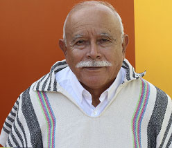
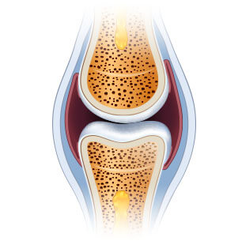
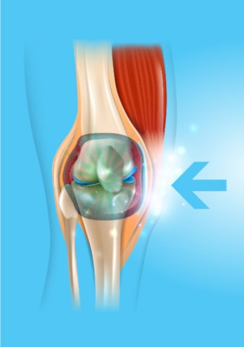

A causa del dolore alle ginocchia e alla schiena, riuscivo a malapena a camminare. Le pillole, le iniezioni e gli interventi chirurgici non hanno funzionato per me. Ma al contrario: ho perso soldi e energia. Non sapevo cosa fare. Fortunatamente, ho scoperto questa crema. Dal momento che questa scoperta è stata fatta da un famoso scienziato, non avevo dubbi che mi avrebbero aiutato. Ed ecco il risultato! Mi sono sentito meglio già dalla prima applicazione. Dopo un mese, mi sento giovane e pieno di forza.
Cammino a lungo e lavoro nel giardino con mia nipote. Il dolore è sparito. Grazie!
★★★★★
Maria Guido, 73 anni
Facile ed efficiente
È difficile credere che un metodo così semplice possa fare miracoli del genere. Usi semplicemente la crema e poco dopo riacquisti la mobilità. Incredibile. Io, le mie sorelle e le mie cugine l'abbiamo già provato. Lo consiglio a tutti! In effetti, questa è la soluzione dei dolori articolari
★★★★★
Simona Abeni, 67 anni

Mi sento utile per la mia famiglia
Anni di duro lavoro in fabbrica mi hanno distrutto le articolazioni. Ho promesso ai miei nipoti un paio di volte che avrei giocato a calcio con loro o saremmo andati in bicicletta insieme, ma poi l'ho annullato a causa del dolore. I bambini non lo capiscono e si arrabbiano. Mi sentivo inutile. Fino a quando mia figlia mi ha regalato questa crema
Fortuflex. È stato fantastico! Ho sentito subito la differenza. È passato 1 mese da quando lo uso e mi sento invincibile!Posso correre e andare in bicicletta
senza problemi. Passo il tempo di nuovo con la mia famiglia come prima.
★★★★★
Sergio Buccino, 67 anni
Ho ricostruito la mia vita
Essere in sovrappeso e lavorare in piedi mi ha rovinato le ginocchia: sono un parrucchiere. Non sopportavo il dolore, quindi prendevo più di 10 pillole al giorno, ma mi faceva dormire e stavo ingrassando. Fortunatamente, un collega mi ha consigliato questa meravigliosa crema. Questa si è rivelata la soluzione perfetta. Il dolore è scomparso come per magia e la mia passione per il parrucchiere è tornata. Ho riacquistato la mia salute, il che mi ha permesso di iniziare ad allenarmi e... Ho perso 10 kg! Un cambiamento incredibile.
★★★★★
Ana Volpe, 43 anni
La moglie ha smesso di lamentarsi
A casa, mia moglie mi troverà sempre qualcosa da fare: riparare un rubinetto, assemblare un armadio o dipingere. Ed è difficile per me fare un tale lavoro, mi fa male la schiena, non posso né chinarmi né sedermi! Anche i gomiti e le ginocchia sono problematici. Fortunatamente, la crema Fortuflex ha reso la mia colonna vertebrale sana e mi ha permesso di rafforzare le articolazioni. Mi sentivo come se avessi perso il peso che avevo accumulato per anni. Mia moglie ha smesso di lamentarsi che non volevo aiutarla in casa!
★★★★★
Luca Manni, 67 anni
Sono tornato al lavoro
Immagina come ci si sente a perdere la mobilità di un braccio? Questo è quello che mi è successo: le mie dita mi facevano male, le mie mani si gonfiavano e tremavano. Sono un gioielliere, quello che faccio è il mio lavoro e la mia passione. Sempre più spesso ho dovuto chiudere il mio piccolo laboratorio e per questo motivo la mia famiglia ha dovuto limitarsi molto a tutto. Ho iniziato a cercare modi per riparare le articolazioni e ovunque dicevo che questo prodotto
Fortuflex. era il migliore. Ci ho provato, anche se ci credevo poco, ma dopo 30 giorni le mie sono diventati più sane di 10 anni fa. . Sono riuscito a tornare al lavoro!
★★★★★
Agostino SIlvestri, 55 anni
Una nuova vita a un prezzo così basso
Di solito, se qualcosa è efficace, deve essere costoso. Questo è stato il caso della mia massaggiatrice personale, che ho pagato quasi un terzo del mio stipendio e speravo che avrebbe fatto un «miracolo». Ma non vale quel tipo di denaro e ho ancora più dolori alle articolazioni e alla colonna vertebrale. Quando mio cognato mi ha detto di provare Fortuflex, ho pensato che fosse una cazzata. Come potrebbe aiutarmi la crema quando un presunto grande massaggiatore non è stato in grado di aiutarmi? Avresti visto la mia faccia quando i dolori sono passati. Un miracolo!
★★★★★
Carla Zocchi, 67 anni
L'unico metodo efficace
Ho provato diversi metodi per eliminare lo scricchiolio e il dolore all'anca. Niente ha funzionato. Inoltre, la degenerazione si è diffusa anche nella mia colonna vertebrale. Con Fortuflex è successo il contrario. Non mi preoccupo più della mia salute perché sono sano al 100%!
★★★★★
Luana Raffaelli, 68 anni
Con un ciclo di terapia potresti dimenticare il dolore alle articolazioni e alla colonna vertebrale! Gli esperti raccomandano!
Buon giorno,
Sono Marco Foiani, scienziato e specialista in biologia molecolare. In questa pagina, voglio presentare il più grande risultato della mia vita per il quale sono stato nominato per un prestigioso premio. Ho sviluppato un metodo attraverso il quale chiunque può eliminare il dolore e riparare le articolazioni e la colonna vertebrale, ripristinando comunque la mobilità in un unico ciclo di applicazione.
Senza chimica, puoi:
alleviare il dolore alle articolazioni e alla colonna vertebrale – sentire un sollievo;
riparare e rafforzare articolazioni, tendini, muscoli e
colonna vertebrale dell ' 87% in modo che funzionino come nuovi;
ripristinare la salute fisica e non aver paura di diventare disabili;
eliminare l'intorpidimento delle articolazioni e della colonna vertebrale,
ripristina il comfort e la fluidità dei movimenti;
proteggere le articolazioni e la colonna vertebrale dall'usura e mantenere la salute fisica per gli anni a venire;
eliminare la degenerazione, l'infiammazione e il gonfiore – ridurre il dolore e ripristinare il comfort dei movimenti;
ripristinare il corpo dopo fratture, distorsioni e lesioni; e grazie a questo, ottenere 3 volte più energia e goderci di nuovo la vita!
Dovresti sapere che tutto ciò può essere ottenuto senza operazioni pericolose, farmaci costosi, code infinite agli specialisti (che si arrendono anche impotenti...) e senza mangiare cibi malsani (dannosi per il fegato, lo stomaco e i reni), e alla fine risparmiare un sacco di soldi. Se vuoi farlo, dovresti leggere quello che ho da dirti.
Non importa quanti anni hai o da quanto tempo soffri di dolori articolari o spinali. Non importa se le articolazioni scricchiolano per 2 giorni o 20 anni. Anche se il medico ti ha detto che le articolazioni e la colonna vertebrale sono completamente distrutte e hai perso ogni speranza di una vita normale... Sappi che esiste un rimedio che può aiutarti a ritrovare la mobilità in un solo ciclo di terapia. Nessun dolore!
Scopri perché il mio metodo è un'alternativa ad altri metodi per combattere il dolore articolare:
aiuta ad alleviare il dolore quasi immediatamente dopo l'applicazione e i problemi articolari possono essere dimenticati dopo un ciclo di applicazione;
sicuro per il corpo: la formula macromolecolare è un complesso basato su componenti naturali che lavorano in perfetta armonia con il corpo umano. Pertanto, non avvelena il corpo e non provoca dipendenza* ((*possibile intolleranza individuale agli ingredienti);
aiuta a riparare anche le articolazioni e la colonna vertebrale più danneggiate in modo che funzionino come nuove, senza dolore;
può essere applicato a casa invece di aspettare uno specialista nelle sale d'attesa e chiedere aiuto;
consente di risparmiare un sacco di soldi invece di spenderli in metodi o prodotti chimici costosi e talvolta inefficienti.
Ho creato un metodo naturale che ripristinerà le articolazioni e la colonna vertebrale usurate
Grazie a lui, puoi dimenticare il dolore e la paura della disabilità. Tutti i problemi derivanti dalla debolezza delle articolazioni o della colonna vertebrale rimarranno un ricordo del passato. Sarai in grado di eliminare non solo il dolore, ma anche la scarsa mobilità, il cigolio e il gonfiore. Finalmente sarai in grado di fare tutte le cose che fino ad ora non potevi fare a causa del dolore.
Salirai le scale, riuscirai a piegarti e prenderai i nipoti nelle braccia senza problemi. Sarai in grado di prenderti cura del tuo giardino, camminare, andare in bicicletta, ballare! E tutto questo perché sono riuscito a sviluppare una formula
per migliorare il funzionamento delle articolazioni e ripristinare la loro mobilità. Come ho fatto?
Volevo salvare la vita di mia madre.
Secondo recenti studi, in Italia, una persona su tre di età compresa tra 36 e 95 anni ha problemi alle articolazioni o alla colonna vertebrale. Queste persone di solito non se ne rendono nemmeno conto, pensano che sia normale che a volte il corpo sia dolorante, insensibile o scattante. Tuttavia, la maggior parte è a rischio di grave degenerazione e deterioramento della cartilagine, il che potrebbe significare che un giorno non sarai in grado di alzarti dal letto...
Sfortunatamente, questo problema ha interessato anche mia madre. All'inizio era difficile solo per lei salire le scale o alzarsi dalla sedia. Ma poi la situazione è peggiorata... Nel giardino di cui si prendeva cura con tale zelo, le erbacce iniziarono a crescere perché non poteva più prendersene cura. Ha smesso di invitarci alle cene di famiglia. Stava diventando sempre più irritabile e triste. Più tardi, a causa di dolori alle ginocchia, ai fianchi, alla colonna vertebrale e ai gomiti, non riusciva nemmeno a lavarsi.
Era una minaccia per la sua vita!
La cosa peggiore è che la mobilità ha iniziato a minacciare la sua vita. Non dimenticherò mai il giorno in cui sono venuto a prendere mia madre per portarla da uno specialista. Mia madre aveva bisogno di attraversare la strada e... è stata quasi investita da un'auto! A causa del dolore, camminava molto lentamente e improvvisamente il suo ginocchio si ammalò così tanto che non riuscì a fare un passo in più. L'autista si è fermato all'ultimo momento...
Ero furioso quando ho visto la sua borsa piena di vari rimedi per le articolazioni. Si è scoperto che stava assumendo molti farmaci tutto il tempo. Questo ha chiarito perché aveva ulcere allo stomaco, problemi al fegato e altri problemi di salute... MMia madre voleva fare qualcosa al riguardo. Ma tutti le medicine, invece di aiutare, hanno letteralmente avvelenato il suo corpo.
Come ho inventato la formula?
Ho dovuto aiutare mia madre a ripristinare la salute delle articolazioni e con loro la salute generale e la gioia di vivere. Volevo che fosse una nonna meravigliosa per i miei figli, proprio come era una madre meravigliosa per me. E ho pensato: "signore, sei uno scienziato! Sei stato coinvolto nella scoperta di molte sostanze diverse per combattere le malattie. Perché non inventi un prodotto per rafforzare le articolazioni?" Così ho iniziato la ricerca...
Ho fatto test di laboratorio intensivi per un anno. Ho provato diverse combinazioni di sostanze attive su mia madre. Sottolineerò che erano tutti naturali e sicuri per il corpo. Sono stato ispirato dal potere degli ingredienti naturali combinati con gli ultimi progressi della biologia molecolare. La conoscenza scientifica, la fede nella natura e un po ' di fortuna sono state rapidamente ripagate: ho escogitato una formula Macro molecolare unica.
Ho immediatamente iniziato a redigere documenti per test su larga scala. La sua efficacia del 98%
è stata confermata dai più grandi centri di ricerca in Europa e negli Stati Uniti! Anche durante la fase di test, la mia formula macromolecolare ha aiutato a ripristinare naturalmente la funzione articolare e spinale in migliaia di volontari.
Risultati sorprendenti
Il dolore di mia madre è diminuito non appena ha iniziato ad applicare la mia invenzione. Era contenta che il dolore al ginocchio palpitante non la disturbasse più. Ma quello era solo l'inizio. Dopo una settimana, le articolazioni e la colonna vertebrale hanno smesso di scricchiolare e intorpidire. Poi il gonfiore alle ginocchia e ai gomiti è scomparso, tutte le infiammazioni nelle articolazioni e nella colonna vertebrale sono scomparse. Mia madre ha ripreso il suo giardino preferito. Siamo rimasti tutti stupiti quando all'improvviso è salita in bicicletta e ha guidato piena di felicità!
- Perché stai andando così lentamente? - chiese con impazienza quando uscimmo a mangiare con tutta la famiglia. E siamo solo abituati a camminare lentamente in sua presenza. Entro 4 settimane, la mamma ha confessato allegramente: "Figliolo, le mie articolazioni sono sane. Mi sento agile come quando ero giovane! Hai inventato l'antidoto ai dolori articolari! Quante persone hai intenzione di aiutare! Ti sono molto grata! "E, naturalmente, mia madre ha ballato di felicità con i suoi pronipoti per il suo 85 compleanno. Gli occhi degli ospiti si sono arrotondati quando l'hanno vista!
Mia madre ha riacquistato la piena mobilità e con essa l'energia e la gioia della vita.
Finora, il deterioramento delle articolazioni e della colonna vertebrale è stato inevitabile nel corso degli anni. Oggi, con la mia formula macromolecolare, il processo di usura delle articolazioni e delle vertebre dello scheletro umano non solo può essere fermato, ma può anche essere invertito.
Lascia che ti spieghi come funziona la mia forte formula articolare. Questo processo è piuttosto complicato, ma cercherò di spiegarlo in un modo che un non scienziato possa capire.
Aiuto contro il dolore e la riabilitazione articolare 24 ore al giorno
Le articolazioni e la colonna vertebrale si consumano nel corso degli anni, ma si rompono anche per eccesso di peso, intenso lavoro fisico, trasporto di pesi, sport eccessivi, lesioni e lividi. Il liquido sinoviale e la cartilagine vengono distrutti. Le articolazioni sono come una cerniera non lubrificata: iniziano costantemente a sfregare e degradarsi. Nel tempo, inizi a sentire rigidità e dolore terribile che interferisce con il normale movimento. Si sviluppa una grave infiammazione e distruzione.
Sfortunatamente, le cellule della cartilagine e del liquido sinoviale non hanno la capacità di autorigenerarsi. Ciò significa che, a differenza di altre cellule del corpo umano, non possono tornare in vita da sole. Ecco perché le articolazioni e la colonna vertebrale si consumano giorno dopo giorno. Logicamente, non puoi smettere di camminare o fare le attività quotidiane per proteggere le articolazioni e la colonna vertebrale. Sarebbe assurdo.
Quindi il mio compito era creare una formula di azione radicale che aiutasse ad eliminare il dolore, riparare le articolazioni e la colonna vertebrale usurate e proteggere da danni futuri. E ho capito! Ho sviluppato una formula Macro molecolare di recupero intensivo. L'ho chiamata Fortuflex.
La formula penetra nei punti dolenti e aiuta a disattivare gli impulsi di dolore elettrico a livello cellulare in modo che non ci sia dolore. Grazie alle sue proprietà contribuisce alla stimolazione della nutrizione cellulare, che include processi rigenerativi. Allo stesso tempo, gli ingredienti prevalentemente naturali hanno un effetto positivo sull'avvio della rigenerazione automatica della cartilagine e del liquido sinoviale. È sufficiente utilizzare questa formula regolarmente in modo che la rigenerazione avvenga 24 ore al giorno. Conduci uno stile di vita normale e le articolazioni e la colonna vertebrale ringiovaniscono e ripristinano la mobilità.
Perché la mia formula macromolecolare è chiamata "antidoto al dolore articolare"?
HA UN'EFFICIENZA DEL 98% NELLA RIGENERAZIONE DELLA CARTILAGINE E DEL LIQUIDO SINOVIALE* (**dati di ricerca interna DELL'Istituto di ricerca di reumatologia)
PRIMA
L'articolazione è danneggiata e soggetta a degenerazione e dolore

DOPO
una sana articolazione ricostruita senza dolore
Fino ad ora, questo potrebbe sembrare un miracolo. Tuttavia, questo è un fatto che conferma il caso di mia madre e di 14 mila persone che sono già riuscite a ricostruire articolazioni e colonna vertebrale forti grazie al mio metodo. Inoltre, la formula macromolecolare ha ricevuto il riconoscimento e l'ammirazione dei migliori specialisti in Reumatologia, Ortopedia e neurologia. D'altra parte, continuo a ricevere e-mail da persone che mi ringraziano per il mio aiuto; questo è il motivo principale per cui sono felice e orgoglioso di questa scoperta.
È SICURO ED ESTREMAMENTE FACILE DA USARE

Gli ingredienti naturali fanno miracoli — la scienza deve solo trovare la loro composizione perfetta! È stato con questo motto che ho creato una formula Macro molecolare per la riparazione articolare. La terapia consiste in sostanze naturali e sicure
che ho usato nella crema in modo che tutti possano seguire il corso comodamente da casa. Devi solo applicarlo per eliminare il dolore e poi, giorno dopo giorno, goderti le articolazioni e la colonna vertebrale forti e condurre di nuovo una vita piena! * Il risultato è individuale
Tutti i tuoi amici e parenti, abituati a vederti tormentato, a malapena a camminare, saranno stupiti. Quando ti vedono correre, andare in bicicletta e ballare senza dolore. Non crederanno che hai recuperato le articolazioni con il corso di applicazione della crema!
AIUTO PER ALLEVIARE RAPIDAMENTE IL DOLORE
INGREDIENTI NATURALI
FACILE UTILIZZO
NOTEVOLE RISPARMIO DI DENARO RISULTATO DOPO LA PRIMA APPLICAZIONE DELLA CREMA
AIUTA A RIPARARE LE ARTICOLAZIONI E LA COLONNA VERTEBRALE
CONSIDERABLE AHORRO DE DINERO
Come puoi perdere questa opportunità per eliminare il dolore e ripristinare la tua salute?
Potresti continuare a soffrire di terribili dolori articolari e spinali. Puoi anche rovinare la tua salute con sostanze chimiche dannose e avere paura di rimanere costretto a letto per il resto della tua vita... Ma perché, se ti offro un modo rapido, semplice ed economico per ripristinare la tua salute in modo indolore? Nella maggior parte dei casi, un corso di crema è sufficiente per unirsi ai 14.000 utenti soddisfatti di Fortuflex che hanno già sconfitto il dolore, ripristinato le articolazioni e la colonna vertebrale e ora godono della salute!
Non rischi nulla!
Usando Fortuflex, puoi aiutare il tuo corpo ad eliminare il dolore e ripristinare la mobilità fisica in un solo ciclo di terapia. Inoltre, non rischi nulla!
3 vantaggi a favore della mia formula macromolecolare
1. Originalità: Fortuflex utilizza una formula a base di sostanze potenti che aiutano a ripristinare le articolazioni e la colonna vertebrale. La sua efficacia è confermata dai nostri test di laboratorio. È l'unica formula così innovativa. In questo modo puoi ottenere il prodotto originale disponibile solo attraverso questo sito.
2. Qualità: con il processo di produzione avanzato della formula macromolecolare, soddisfa i più alti standard di qualità. Tenendo conto della tua salute e del tuo benessere, la concentrazione dei principi attivi è selezionata in modo tale che l'applicazione sia completamente sicura. Tutto questo per garantire che i risultati soddisfino le tue aspettative.
3. Efficienza: Numerosi test di laboratorio e di consumo confermano L'efficacia di Fortuflex. Sulla base di questi risultati, la mia invenzione ha ricevuto il riconoscimento da esperti di tutto il mondo che la raccomandano a chiunque si rivolga a loro per chiedere aiuto. Sono convinti che con un corso di crema sarai in grado di eliminare il dolore alle articolazioni e alla colonna vertebrale, oltre a ripristinare la mobilità.
Dimentica il dolore, ripristina le articolazioni e la salute fisica in modo semplice, sicuro ed economico. Le grandi aziende farmaceutiche statunitensi e giapponesi stanno letteralmente combattendo per un brevetto sulla mia formula macromolecolare. Quando lo venderò, la crema sarà disponibile in tutto il mondo, ma sicuramente a un prezzo enorme.
Prima che questo succederà, ho deciso di renderlo disponibile alla gente del mio paese chiedendo aiuto a un ente di beneficenza che ha finanziato parte della produzione e il prodotto è ora disponibile
con il 50% di sconto. Tutto per aiutare il maggior numero di persone nel mio paese a eliminare i problemi alle articolazioni e alla colonna vertebrale.
Ecco perché ti incoraggio a cogliere l'occasione! È facile ordinare. Non è necessario inviare soldi da qualche parte per ottenerlo. Tutto quello che devi fare è
compilare il modulo in 2 minuti e in pochi giorni riceverai un pacco per il quale pagherai comodamente il corriere.
Grazie per aver dedicato del tempo a leggere il mio articolo. Ti auguro salute in una nuova vita in cui puoi
goderti la salute e... ballerai, correrai, andrai in bicicletta e non avrai problemi a fare tutte le cose che fino ad ora erano impossibili a causa dei dolori articolari!
Marco Foiani
Acquista Fortuflex a un prezzo scontato 39EUR in meno
Pacchi rimasti:
12
Ordina oggi e risparmia
39EUR. La promozione terminerà quando il limite di 200 ordini sarà esaurito.